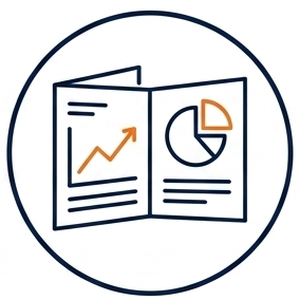
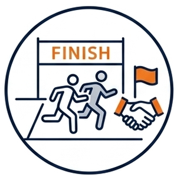
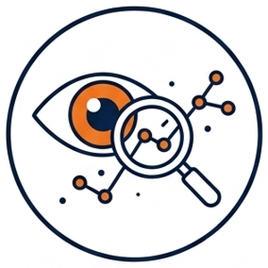
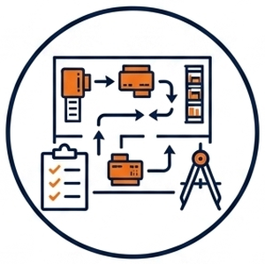
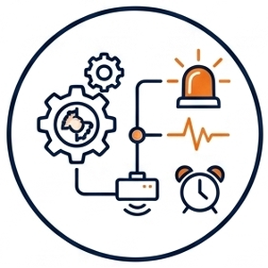
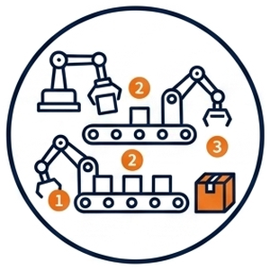
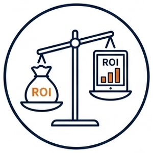

アイツインは、中小製造業の工場・現場を省力化・自動化で最適な状態に仕上げ、確かな技を未来へつなぎ、 関わるすべての現場を笑顔にしていきます。
人手不足のいま、多くの現場が同じ壁にぶつかっています。
本当はもっと受けられるのに、回す人がいない。せっかくの注文を、見送るしかない日がある。
毎日のくり返し作業に追われ、付加価値の高い仕事に手が回らない。ムダがどこにあるかも見えにくい。
「自動化したい」けれど、どこから手をつけるべきか、効果が出るのか、判断材料がない。
３Dスキャンを使って、御社の現場を最適化します。一度きりで終わらない、伴走型のご支援です。
アイツインは、省人化・省力化・自動化を含む現場の最適化を進めます。 御社が描く最終目標を一緒に達成するために、方向性決めから実行・ふりかえりまで伴走します。
まず御社のお困りごと・目標をうかがい、どこから・どう進めるかの方向性を一緒に決めます。

月1回、進み具合をレポートにまとめ、報告会で共有。次の一手を一緒に確認しながら進めます。

御社が描く最終目標を一緒に達成すべく、一段ずつ、長くお付き合いしながら伴走支援します。

動線・ムダ・滞留を、データで「見える」かたちに。

変更案を、現場を止めずにデジタル上で事前検証。

振動・電流などの変化から、止まる前に気づく。

部分ではなく工場全体で、ムダの少ない流れへ。

効果を数字で示し、安心して進められる材料に。
こうした現場の最適化を支えているのが、デジタルツインという技術です。
デジタルツインとは、現実の工場や設備を、デジタル空間に“双子（ツイン）”のように再現する技術です。 ふつうの3Dモデルや、決まった条件で動かすシミュレーションとは違い、 現場につけた小さな計測器（IoTセンサー）からのリアルタイムのデータで常に最新の状態に更新され、 現実とデジタルが双方向でデータをやり取りするのが特徴です。
いわば、「現場のリアルを、そのまま映すデジタル版」。
「生きた」データが行き来するからこそ、机上の空論ではなく、現実に効く改善につながります。
完成する前に品質を予測し、不良を未然に防げます。
設備ごとの電力消費を可視化し、ムダな稼働やピークを抑えられます。
危険な作業やレイアウトを、実際に試す前にシミュレーションで確認できます。
複数拠点の状況を、移動せずにリアルタイムでまとめて確認できます。
記録されたデータから、不具合の原因を数分で特定できます。
納期・稼働率・在庫などを踏まえた生産計画を、自動で組み立てられます。
アイツインは、3ヶ月＝1クール・全4クール（1年間）の年間計画で、一緒に工場を育てていく伴走型です。 自動化・デジタルツインの導入を、ヒアリングから始まるPDCA運用として一段ずつ積み重ねていきます。
「工場がどうなりたいか」という目指す姿と、1年後の目標をヒアリングし共有。方針・スケジュールを各クールに分解し、方針に沿って現場対応（3Dスキャン・人とモノの数値化・IoTセンサー設置など）を行います。
▶ 月次レポート・進捗報告会を2回実施 → 1クール最終報告会（3ヶ月目）で成果物を提出し、次クールへの更新可否を決めます。
1クールの現場対応を継続（必要な場合）。方針に沿って測定・改善を進めます。
▶ 月次レポートを経て、2クール最終報告会で成果物を提出します。
2クールまでの現場対応を継続（必要な場合）。同じサイクルで、着実に前進します。
▶ 月次レポートを経て、3クール最終報告会で成果物を提出します。
3クールまでの現場対応を継続（必要な場合）。1年間の集大成として、成果を形にします。
▶ 月次レポートを経て、4クール最終報告会で成果物を提出します。
成果物は、自動化の場合はレポートと簡易設計図、デジタルツイン化の場合はIoTセンサーや値のダッシュボードを提出します。
各クールの内容や順番は決めつけません。御社へのヒアリングをもとに一緒に組み立て、
「この工程から先に進めたい」といったご要望にも柔軟に対応します。まずは STEP 1 から、無理なく始められます。
※ 遠方の場合や、作業内容によっては交通費・宿泊費を別途申し受けます。
データが回り続けることで、工場はだんだん「自分で気づく」ようになります。
現場の設備の状態が、そのままデジタルツインへ。
異常を先読みし、改善案をデジタル上で試す。
分かったことを現場に返し、また良くしていく。
↺ そして、またデータが入る。このループが回り続ける工場を、一緒に目指します。
Web会議で、御社の現場や課題、目指す姿をお伺いします。
IoTセンサーで取得したデータは、御社にご用意いただくPCに取り込み、
現場（社内）だけで処理する運用が可能です。
このPCを完全にローカル環境でご利用いただく場合、
大切なノウハウや図面、現場の情報を外部に預けることなく、
自社の資産としてデータを積み上げていけます。
一方で、内容によっては計算結果のデータを暗号化したうえで、
クラウドを活用する場合もあります。
御社の状況やご要望に合わせて、最適な形をご提案します。
まずは無料のオンラインヒアリングで、現場の状況やお困りごとをお伺いします。「何が課題か分からない」という状態でも問題ありません。
はい。デジタルツインは大企業だけのものではありません。中小製造業の現場規模に合わせて対応します。
3Dスキャンなどで現物から直接データ化するため、図面が残っていない設備でも対応可能です。
現場の状況やご要望によって異なります。まずは無料ヒアリングで内容をお伺いしたうえで、具体的にご提案します。
取得したデータは、ご希望に応じて社内のPCだけで処理する運用も可能です。外部に預けることなく、自社の資産として積み上げていただけます。
現場の隣に、いつも。

代表
Yuki Kasebe
私は高校卒業後、製造業に15年間在籍してきました。設備の保全としてメンテナンスに携わり、また設計士としてモノづくりに取り組むなかで、ものづくりを「守る側」と「生み出す側」の両方を経験してきました。
設備が止まり、いつ復旧するか分からない焦り。納期に追われながら練り上げた設計。触れて、感じて、考えて、直して、作る。その繰り返しのなかで、「どうすればもっと効率化できるのか」をいつも考えていました。
現場では、繰り返しの作業や重い物の上げ下ろしなど、人の負担が大きい仕事を数多く見てきました。搬送の自動化に取り組むなかで実感したのは、本当に必要なのは人を減らすことではなく、今いる人の負担を軽くすることだということです。省力化・省人化・自動化は、そのための手段だと考えています。
そして、その省力化・自動化を無駄なく進めるために欠かせないのが、事前に試せる仕組みです。「アイツイン」という社名は、デジタルツインに由来します。仮想空間で工場を再現し、シミュレーションができる。これまでは図面を引き、モノを作り、設置するという流れが当たり前でしたが、デジタルツイン上で事前に試せることで、その工数を大きく減らせるようになりました。
デジタルツインは、大企業だけのものではありません。この技術を中小企業へ広め、伝えていくことが、私の使命だと考えています。
私の原点は、ものづくりの経験にあります。だからこそ、机上の空論ではなく、つくる人と同じ目線で課題に向き合えると自負しています。現場に潜む課題を、作業者の目線で解いていきたい。その想いから、アイツインを立ち上げました。
「中小製造業に、おどろきと、わくわくを。」
現場が前を向ける、その瞬間をつくりたい。